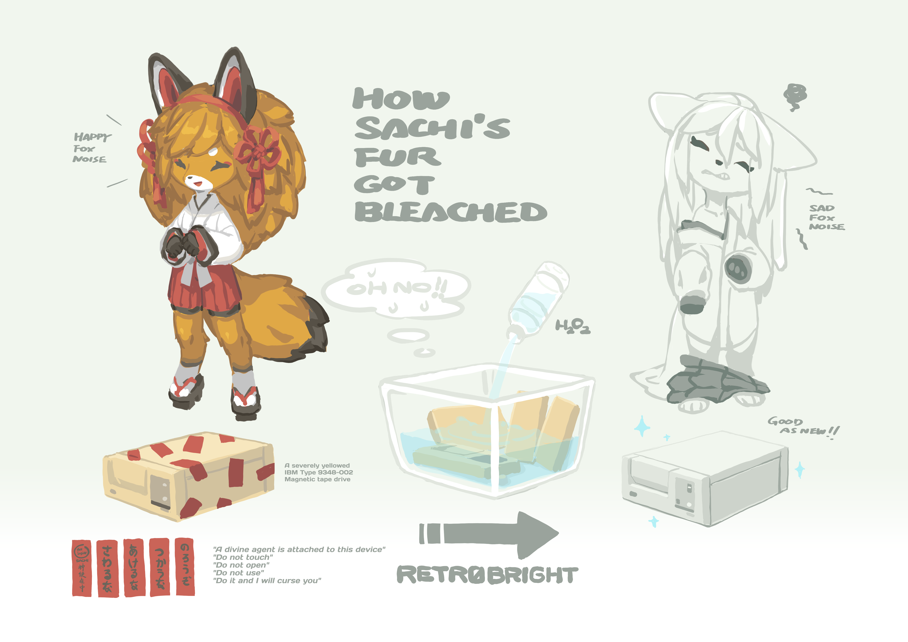

Mascot - Sachi
About
Sachi (さち, 幸, means happiness) is a spirit fox who attaches to an old magnetic tape drive. She loves to fiddle with old technology. Sachi used to be the divine agent of a small Shinto shrine called Suka Jinja (素華神社).
She was known for helping the locals with her wisdom in the past. Nowadays her shrine has been built over by a university, and she assumes her human identity as Professor Suka Sachiko (須賀 早智子) and teaches Japanese History and Computer Science there.
Images
Full-resolution images with and without transparent backgrounds can be downloaded from the GitHub Repository in the etc/img/sachi directory.
License
Sachi was designed and illustrated by the amazing Tyson Tan (tysontan.com). He provides mascot design service for free and open source software projects, free of charge, under free license.
She is dual-licensed under the BSD-3-Clause and the Creative Commons CC-BY-SA
The full text of the BSD-3-Clause can be found in the LICENSE.software file in the root of the repository
The full text of the Creative Commons CC-BY-SA can be found in the LICENSE.docs file in the root of the repository